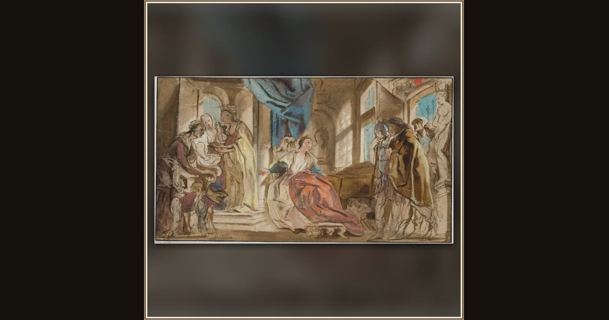

Telemachus Leading Theoclymenus before Penelope
Jacob Jordaens · mid-17th century · Nationalmuseum · Stockholm, Sweden
Sailing home, Telemachus rescues the wandering seer Theoclymenus and brings him to the palace, where the stranger will foretell that Odysseus is near. Explore its place in Book XV of the Odyssey.